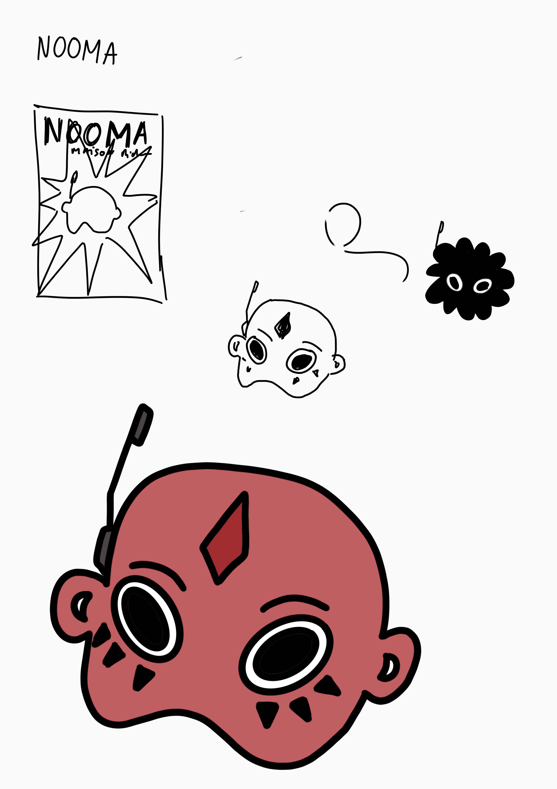
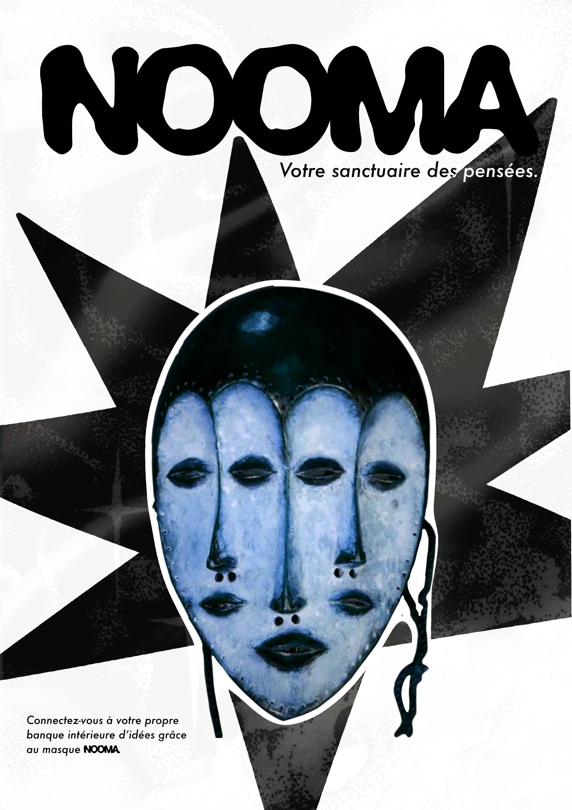

Dans le cadre de cet exercice, j’ai réalisé une affiche présentant un produit imaginé, en un temps limité d’une heure.
En une heure seulement, je devais trouver un concept, lui donner un nom et un slogan et le vendre grâce à un visuel, m'obligeant à faire des sacrifices.
La première étape a consisté à trouver un concept. N’étant pas contrainte par la faisabilité, j’ai imaginé un masque capable de plonger celui qui le porte dans un espace composé de ses idées et de ses pensées : un sanctuaire des pensées, une banque intérieure d’idées.
J’ai ensuite travaillé sur la recherche d’un nom et de visuels.
Le masque occupe une place centrale dans la composition, l’affiche ayant pour objectif de le mettre en valeur et de le promouvoir. L’univers graphique s’inspire du rêve, avec des couleurs majoritairement monochromes, afin d’apporter une dimension à la fois futuriste et rétro.

